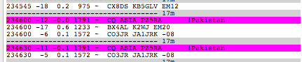

For clarification...

--
Thanks,
Bill
On October 6, 2018 at 4:54 PM Bill Richter via Chat <chat@ncdxc.org> wrote:
Hi, all.
I'm seeing PZ5RA calling FT8 on 17M, and WSJT-X is showing his location as Pakistan, even though QRZ.com shows his QTH as Surinam.
Any idea why? Do I have some configuration issue in WSJT-X? I'm baffled...
--
Thanks,
Bill Richter
KM6MHZ
_______________________________________________
Chat mailing list
Chat@ncdxc.org
http://mail.ncdxc.org/mailman/listinfo/chat_ncdxc.org
Message delivered to brichter@comcast.net